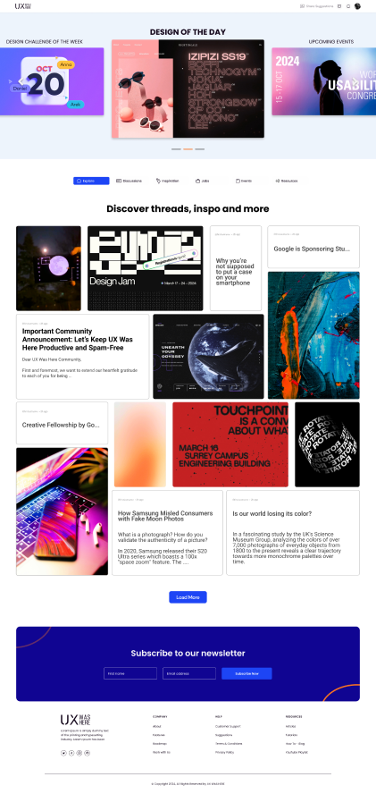

Eunoia UX Design Jam Process Analysis

Client:
UX Was Here
Problem:
High turn rate, low usage rate; UX Was Here faces the challenges of
retaining existing users.
Task:
Present a design solution and its impact addressing user needs and fulfilling the client's objectives.
Team:
Isabele Guimaraes, Brandon Gunawan, Zynab Fayyad
What I Did:
Website Analysis, User Experience Design, User Interface Design, Video Editing
Research:
Our research involved user research through creating personas, competitive analysis, and looking through the client's current website. We asked ourselves "how might we" questions to come up with our solutions:
- How might we inspire designers?
- How might we create a sense of community and belonging?
- How might we improve engagement?
Our Solution
We arrived at four solutions:
- Include function to post work samples to enhance and inspire community engagement.
- Provide feedback in a thread system and implement an upvote system so the community feels listened to.
- Have weekly design challenges to foster community interaction.
- Create an Inspiration page where users can see designs from all around the world.
Our Mockup

Reflections
This experience was challenging but a great opportunity to learn. With limited time, we were forced to think, ideate, and solve problems together in an efficient way. From my personal perspective, our result was successful, but we could have explained our choices for our designs better.